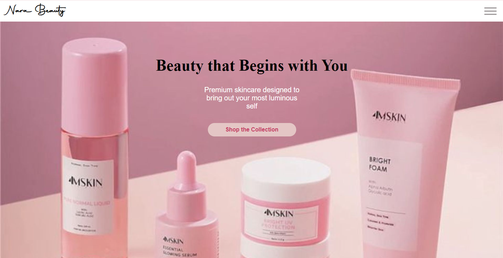

Nara Beauty
Uma landing page desenvolvida com foco em design minimalista e estética para o setor de skincare. Neste projeto, trabalhei a harmonia de cores, tipografia e a estruturação de uma interface intuitiva e atraente para o usuário final.
Desafio
Projetar uma landing page de skincare minimalista que transmita sofisticação e leveza estética, mantendo o carregamento rápido e total responsividade.
Solução
Construção de uma paleta de cores neutras e suaves, tipografia refinada e layout fluído com Flexbox e CSS Grid para adaptação em qualquer dispositivo.
Aprendizados
Estudo aprofundado sobre harmonia visual cromática, design editorial responsivo e controle refinado de alinhamento estético.